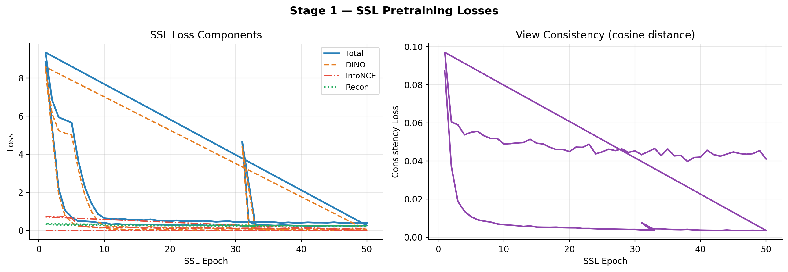
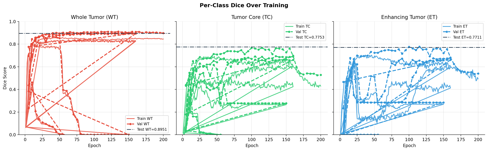
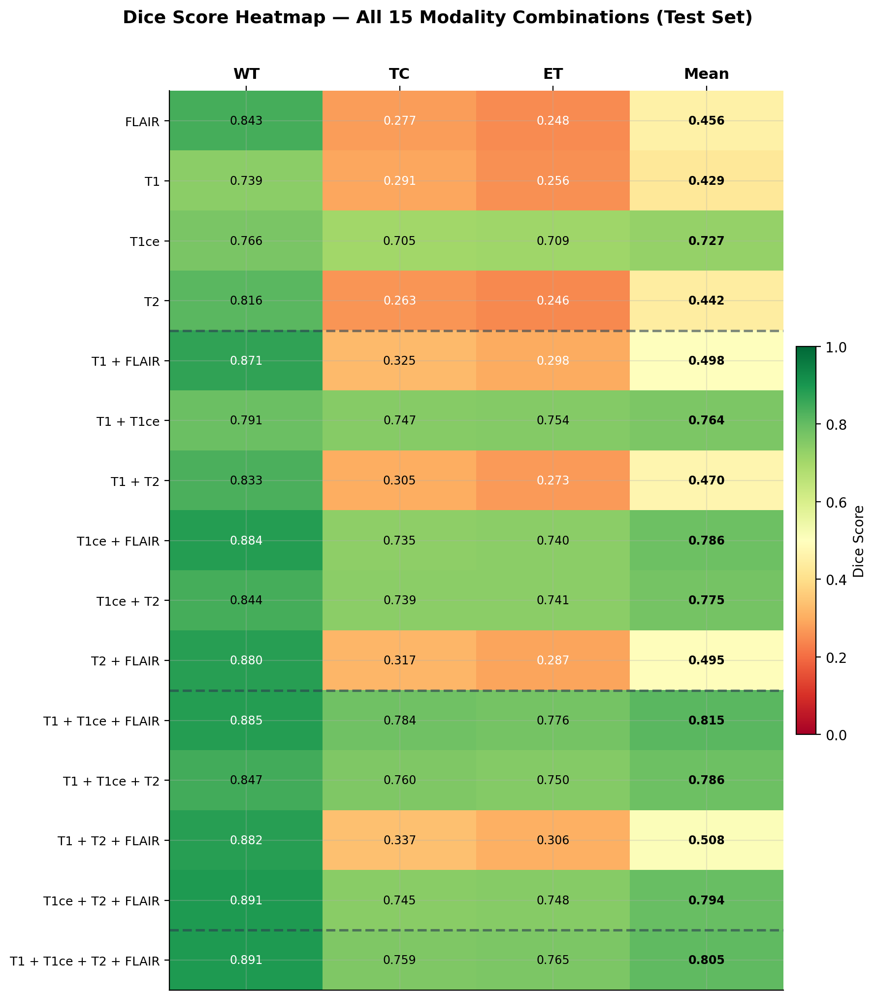
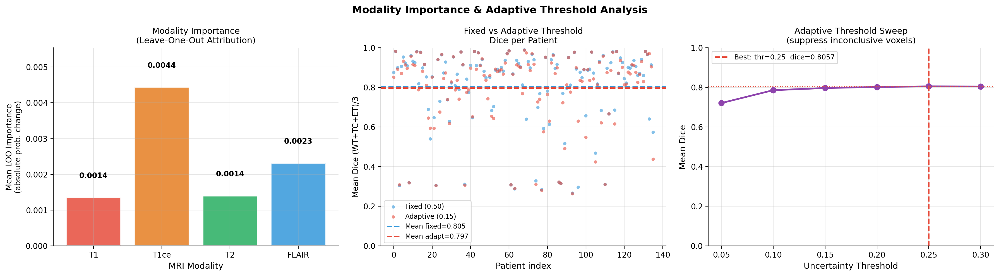
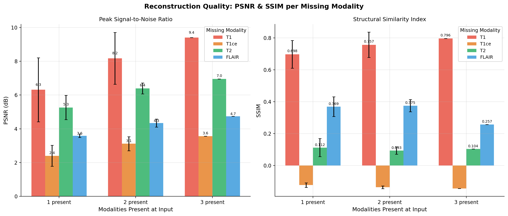
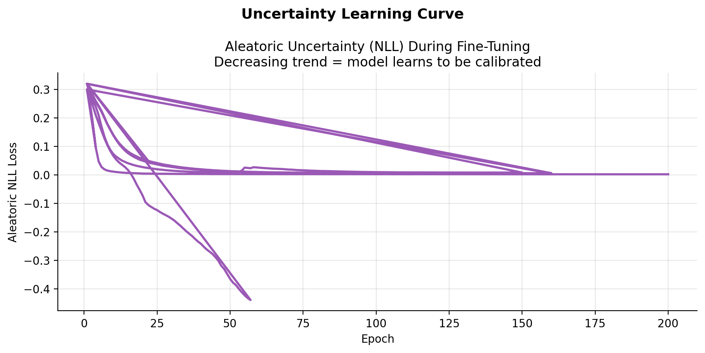
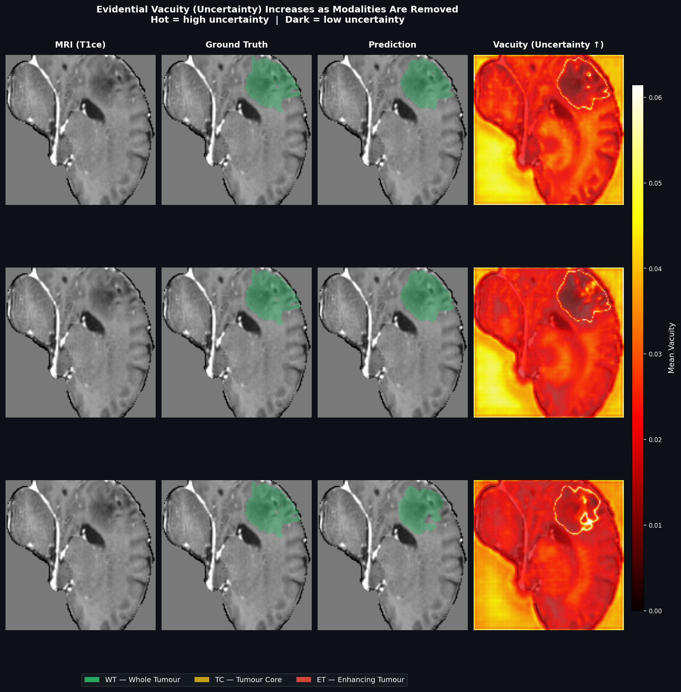
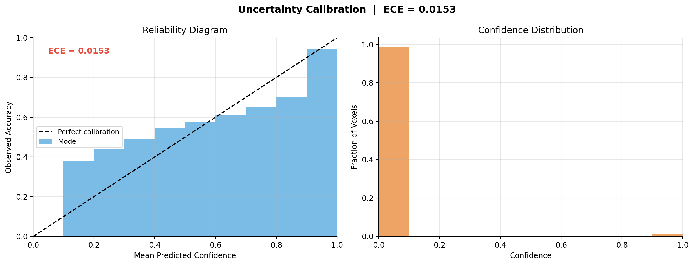

Brain tumor segmentation is one of the most critical tasks in clinical medical imaging. It determines radiation therapy planning, surgical margins, and chemotherapy dosing. Standard clinical protocol acquires four MRI modality scans per patient, each capturing a fundamentally different biological signal.
Removing even one modality from a model trained on all four causes catastrophic performance collapse — often a 40–60% drop in Dice for the tumor core — with no warning or uncertainty signal to the clinician.
The Four MRI Modalities:
Develop an uncertainty-guided self-supervised framework that addresses both the missing-modality fragility problem and the overconfident prediction problem:
Dataset Challenges and How We Solved Them:
Preprocessing Pipeline:
Full forward pass — input to output

Four SSL Loss Components:
The SSL-pretrained encoder is fine-tuned end-to-end with expert segmentation labels using a composite loss of seven components, each targeting a specific failure mode:
V1 (No SSL) vs V2 (With SSL):
| Metric | V1 Baseline | V2 Ours | Gain |
|---|---|---|---|
| WT Dice | 0.886 | 0.895 | +0.009 |
| TC Dice | 0.719 | 0.775 | +0.056 |
| ET Dice | 0.690 | 0.771 | +0.081 |
| Mean Dice | 0.765 | 0.814 | +0.049 |


Reading the Heatmap:
| # Modalities | WT | TC | ET | Mean |
|---|---|---|---|---|
| 4 (all) | 0.891 | 0.759 | 0.765 | 0.805 |
| 3 | 0.876 | 0.657 | 0.645 | 0.726 |
| 2 | 0.850 | 0.528 | 0.516 | 0.631 |
| 1 | 0.791 | 0.384 | 0.365 | 0.513 |

Leave-One-Out Attribution Results:
| Modality Removed | Mean Dice Drop | Primary Clinical Role |
|---|---|---|
| T1ce | −0.0044 | Active tumor — contrast enhancement |
| FLAIR | −0.0023 | Oedema and infiltration extent |
| T1 | −0.0014 | Anatomical reference structure |
| T2 | −0.0014 | Fluid and oedema context |

| Present → Missing | PSNR | SSIM | Result |
|---|---|---|---|
| 3 others → T1 | 9.40 | 0.796 | Good |
| 3 others → T2 | 7.00 | 0.104 | Partial |
| 3 others → FLAIR | 4.70 | 0.257 | Partial |
| 3 others → T1ce | 3.57 | −0.144 | Not possible |
Loss functions: MSE + SSIM


How to Read the Figure:
Each row is one clinical scenario. The rightmost column shows the per-voxel vacuity output of EvidentialHeadV2 — bright = the model is uncertain here, dark = the model is confident.

ECE = 0.0153
Expected Calibration Error — average gap between predicted confidence and actual accuracy across all bins. Lower is better; anything below 0.05 is clinically usable. Our model is well within that range.
Brier Score = 0.0026
Mean squared error between predicted probability and actual label across all voxels. A score this low means the model is rarely far off — confident predictions are mostly right, uncertain ones tend to be wrong.
What We Built
Key Results
Uncertainty Quantification
Reconstruction